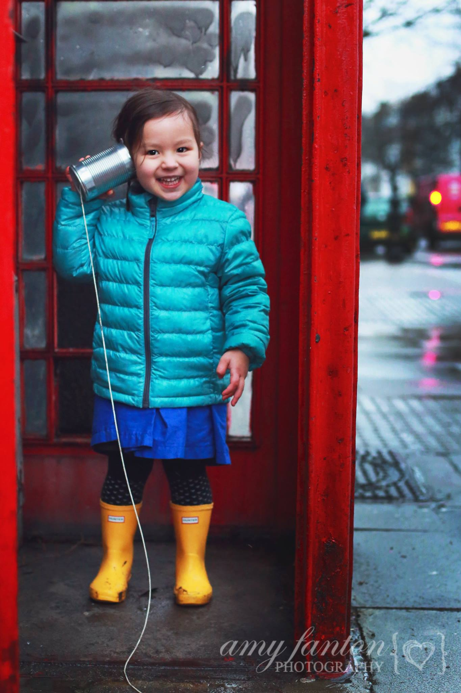
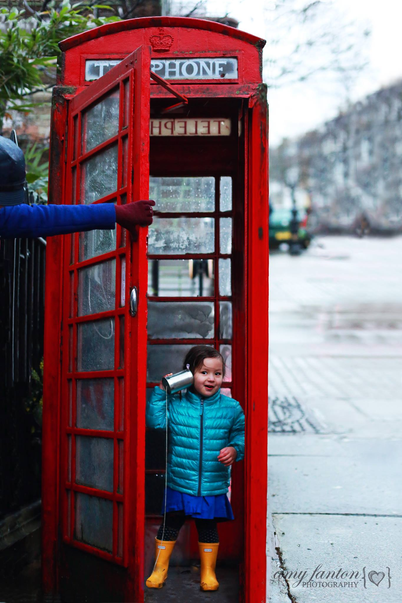

Engagements
London Phone Booth Photo Session
5 February 2014

Last week during Oliver’s play date with his little friend Eleanor, I broke out my camera and followed the two of them around while they played in a London phone booth and with a tin can telephone. I used one of the images for my photography project 52 submission, but some of the others were just too cute not to share! Here are my five favorite of Eleanor from our little mini (more like micro) photo session!
I love these captures of a fun and unique play date. You captured some great moments and expressions.
How freaking cute is her outfit?!? She is adorable and these pictures are adorable also. Great job.
These are adorable! There is nothing cuter than a Child’s smile :)
So cute, I love when i see new blog posts from you I am so jealous of you living in London
What a fun play date! Super fun idea and great images!
I love these photos! I wish we had cute phone booths in america like this :)
Adorable! Love the little cans and string you used! So cute!
So cute! These are just adorable…what a fun idea:)
LOVE love this whole session! You’ve just told a sweet story! Lovely and your processing is great too!
What precious pictures of a beautiful child!
Oh I adore the phone booth with the tin can! What fun photos!
OMG! These are so adorable! How cute is she! I love those phone booths. Very cute mini session
These are stunning. Of csroue I am partial to the ones of that gorgeous family of yours, but I equally love the landscape pictures. Something about the water & the mountains . those images are breathtaking!
